В прошлом уроке разобрались с текстом, сегодня — с цветом. Это короткий, но важный урок: цвет в Фигме настраивается в нескольких разных местах, и если не знать, где искать, легко потратить полчаса на то, что делается за 10 секунд.
План урока
- Где искать цвет на панели Design
- Заливка, обводка, эффекты — разные слои настроек
- Форматы цвета: HEX, RGB, HSB
- Прозрачность (Opacity) объекта vs альфа-канал цвета
- Пипетка и работа с существующими цветами
- Blend modes — режимы наложения, коротко
- Градиенты
- Итог + домашнее задание
1. Где искать цвет на панели Design
У любого объекта — фигуры, текста, фрейма — на панели Design есть отдельные блоки:
- Fill — заливка (фон):
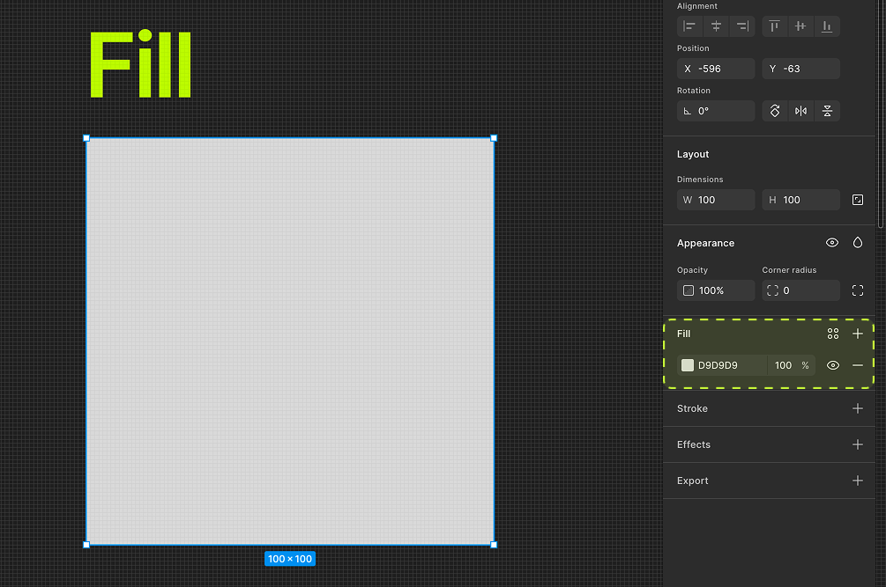
- Stroke — обводка (контур):
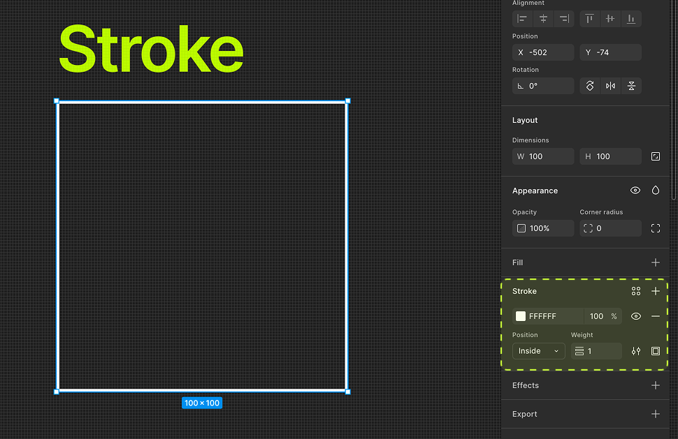
- Effects — тени, блюр и другие эффекты, у некоторых из них тоже есть цвет:
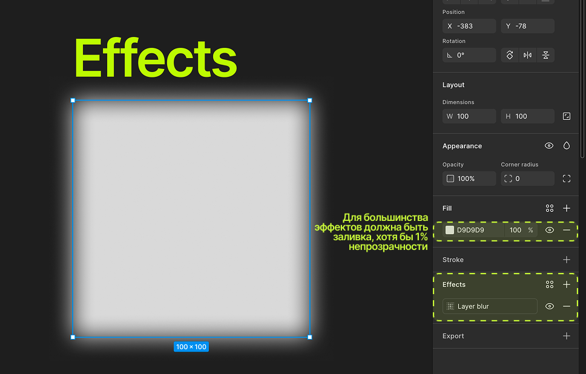
У каждого блока на правой панели — своя палитра, свой формат, своя прозрачность. Это разные настройки, даже если визуально относятся к одному объекту.
2. Заливка, обводка, эффекты — разные слои настроек
Есть разные форматы заливки: цветом, градиентом, паттерном, фото/видео, и шейдером(это мы разбирать не будем, так как эта фича в бете и есть не у всех пользователей). Как залить цветом мы уже поняли, вот как залить картинкой:
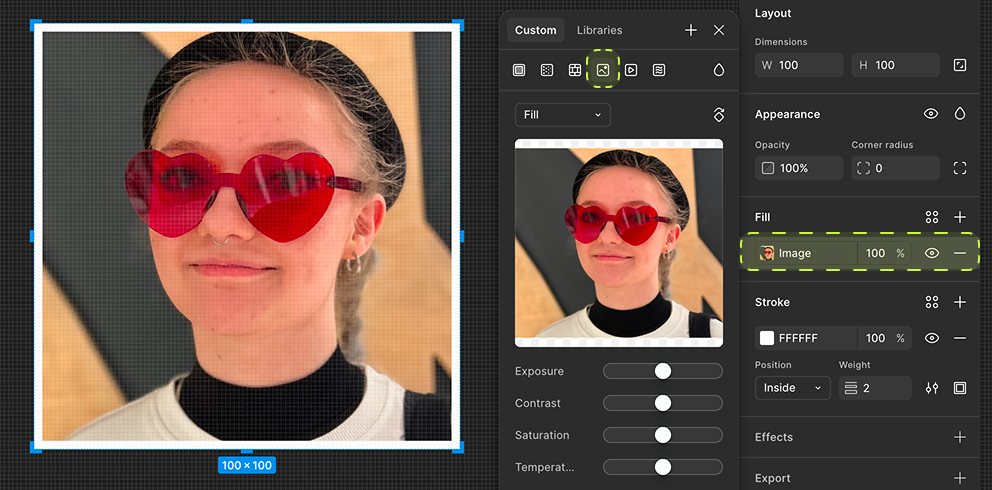
Можно комбинировать сколько угодно заливок, обводок и эффектов на одном объекте — они складываются друг на друга по списку, как слои в Photoshop. Порядок в списке имеет значение: то, что выше — отображается поверх.
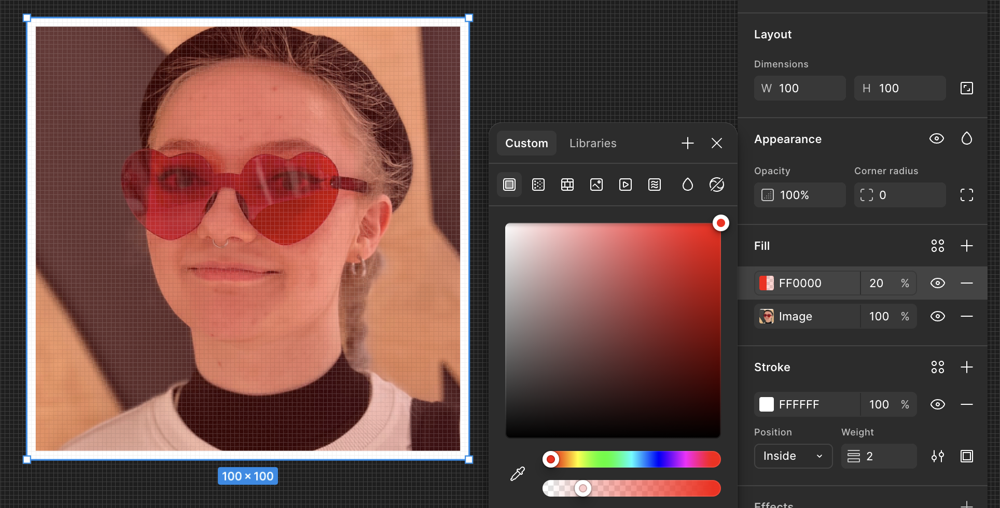
Пример: карточка может иметь белую заливку, тонкую серую обводку 1px и мягкую тень (drop shadow) — три независимых настройки, которые вместе создают ощущение «карточки, приподнятой над фоном», как то так...
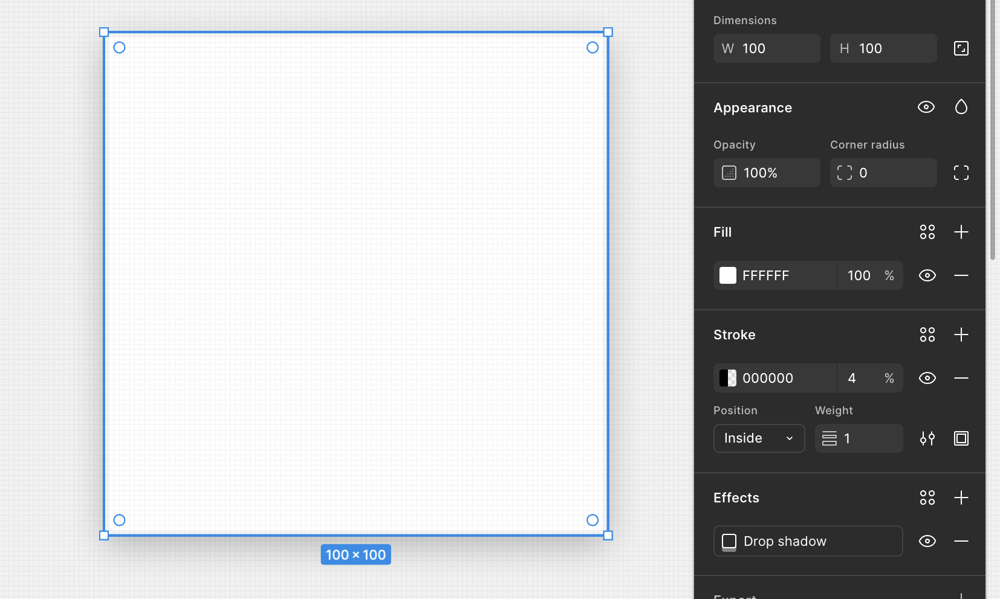
3. Форматы цвета: HEX, RGB, HSB
В окне выбора цвета (палитре) можно переключать формат (маленькие стрелочки рядом с полем):
- HEX — шестизначный код вроде
#2D2D2D, самый удобный для передачи разработчику и вставки из брендбука; - RGB — значения красного, зелёного, синего от 0 до 255;
- HSB/HSL — оттенок (Hue), насыщенность (Saturation), яркость (Brightness/Lightness) — удобно для «покрутить и подобрать на глаз» оттенок вручную.
Вот так один и тот же цвет имеет разные коды, в зависимости от формата:
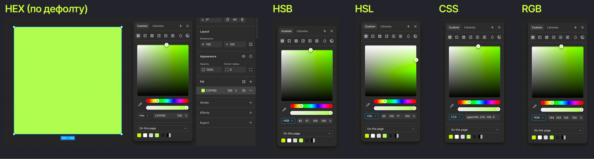
Если у вас есть цвет из брендбука или дизайн-системы — всегда вставляйте точный HEX-код, не подбирайте на глаз через палитру. А лучше используйте стили и/или токены, для цвета, о них — в следующем уроке.
4. Прозрачность (Opacity) объекта vs альфа-канал цвета
Это второй частый источник путаницы:
- Opacity объекта (в самом верху панели Design) — делает прозрачным весь слой целиком, включая текст, обводку, тень;
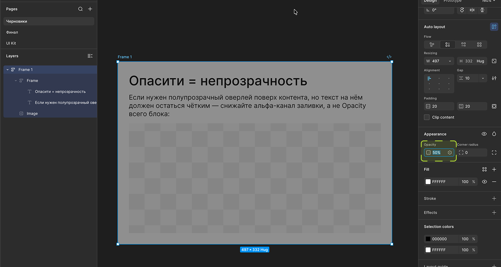
- Альфа-канал заливки (поле с процентом рядом с кодом конкретного цвета) — делает прозрачной только эту заливку, при этом обводка и текст остаются полностью непрозрачными.
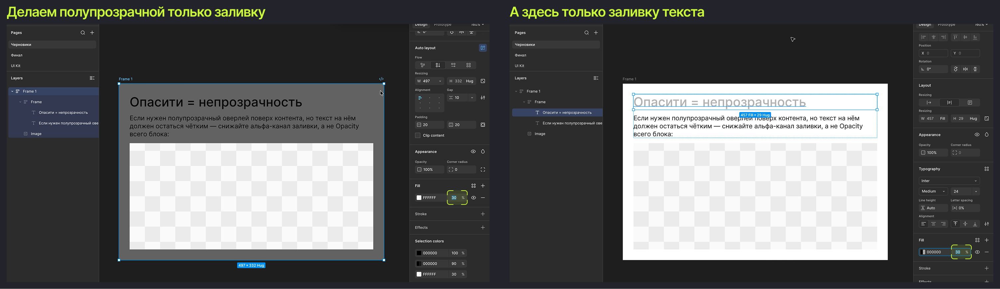
Практическая разница: если нужен полупрозрачный оверлей поверх контента, но текст на нём должен остаться чётким — снижайте альфа-канал заливки, а не Opacity всего блока.
5. Пипетка и работа с существующими цветами
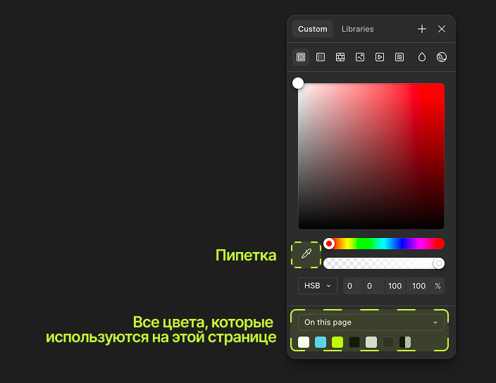
В окне выбора цвета есть иконка пипетки — ей можно взять цвет с любого места на холсте, даже с изображения. Полезно, когда нужно точно повторить цвет с макета дизайнера или с загруженного скриншота, не выясняя HEX-код вручную.
Ниже в палитре — история недавно использованных цветов и, если в файле уже есть стили — список цветовых стилей команды (об этом подробнее в уроке про стили).
6. Blend modes — режимы наложения, коротко
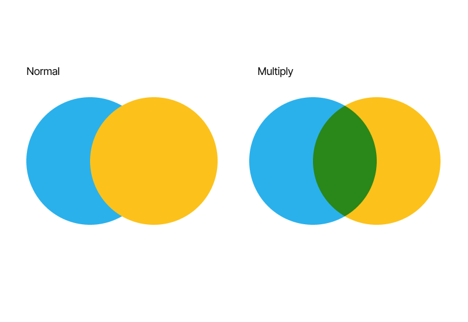
Режимы наложения меняют, как цвет объекта смешивается с тем, что находится под ним. Самые ходовые:
- Multiply — затемняет то, что снизу, хорошо для теней и виньеток;
- Screen — осветляет, хорошо для бликов и свечения;
- Normal — обычное поведение без смешивания (по умолчанию).
Есть в фигме дополнительный режим наложения pass-through, ты, в отличие от немногих про него будешь в курсе:
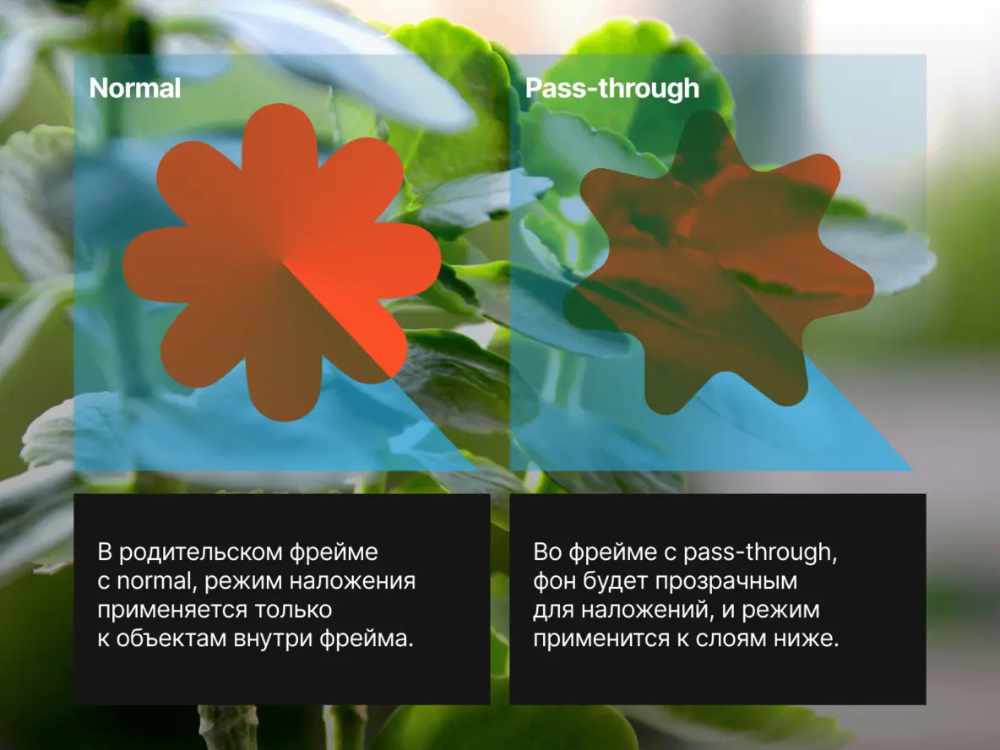
Для UX-редактора это скорее «знать, что существует», чем ежедневный инструмент — но полезно понимать, если в макете дизайнера вдруг «не тот» цвет — возможно, дело в применённом blend mode у слоя выше.
📎 Источник для более глубокого разбора — моя статья: Режимы наложения в Фигме
7. Градиенты
В том же выпадающем списке, где Solid color, есть градиенты: Linear, Radial, Angular, Diamond:
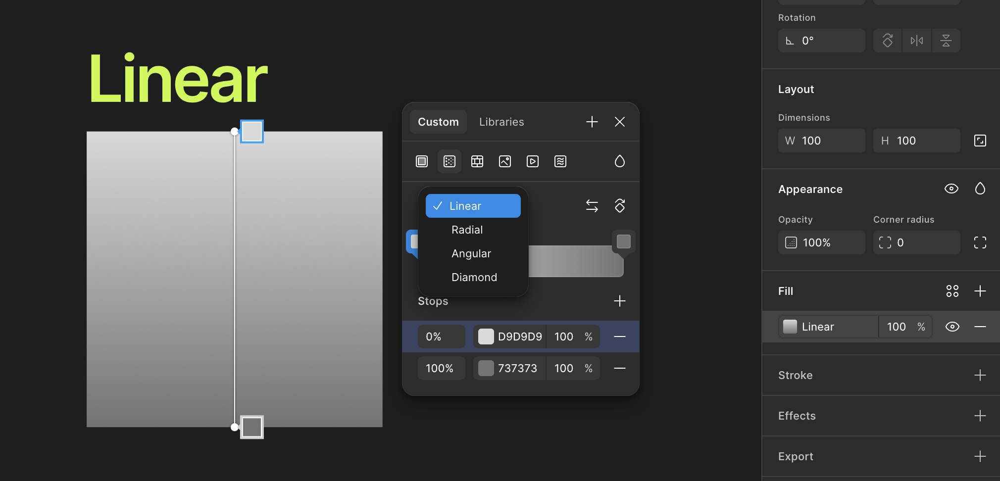
Все виды градиентов:
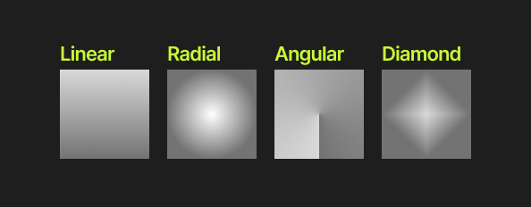
У каждой точки градиента (stop) можно задать свой цвет и прозрачность, двигать их можно прямо на объекте на холсте, чтобы наклонять градиент как хочется:
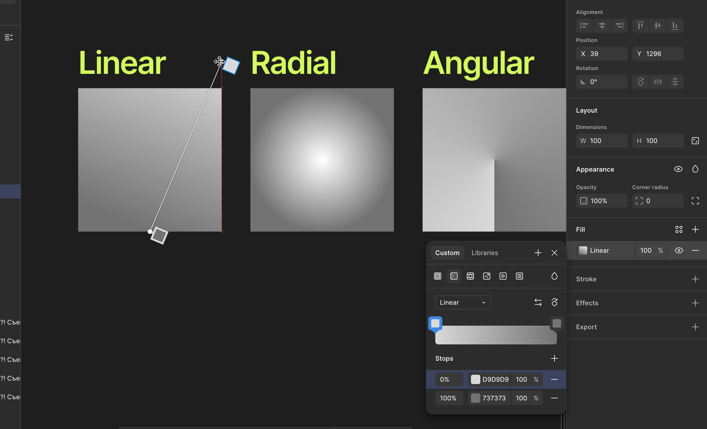
Пример: обложка статьи фотка — поверх хотим текст, но нужно затемнить чуть низ с одной из сторон. Вот как это сделать с помощью градиента и опасити:
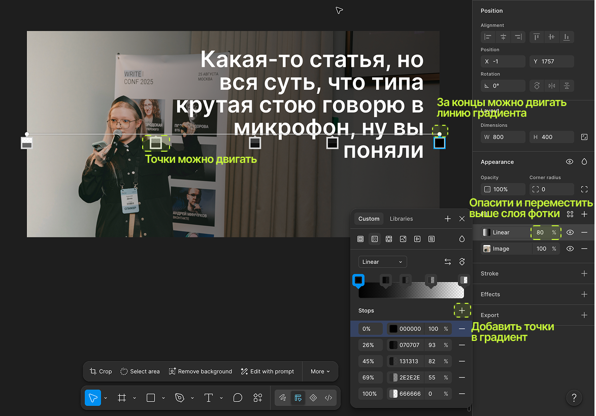
Итог урока
Сегодня разобрались, где искать настройки цвета, чем отличаются форматы записи, в чём разница Opacity и альфа-канала, и потрогали градиенты. В следующем уроке пойдём дальше — научимся сохранять эти настройки в переиспользуемые стили, чтобы не настраивать один и тот же цвет по десять раз.
Домашнее задание:
- Создать прямоугольник с заливкой по точному HEX-коду (взять любой цвет с рефа или брендбука).
- Добавить к нему обводку другого цвета и мягкую тень.
- Сделать полупрозрачный оверлей двумя способами — через Opacity и через альфа-канал заливки — и сравнить разницу на текстовом слое поверх.